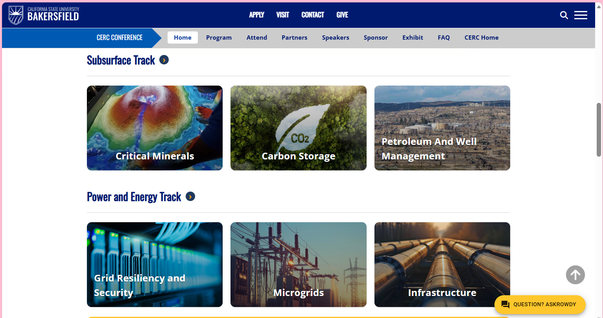
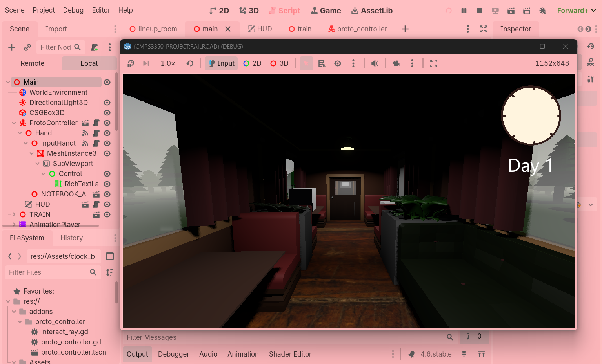

Hello, I'm
Brooklyn Stitt
Software Developer
CSUB Computer Science Student. Incoming intern at LLNL.
Hello, I'm
Software Developer
CSUB Computer Science Student. Incoming intern at LLNL.
I am a 3rd-year Computer Science student at California State University, Bakersfield, graduating in May 2027. My love for programming began in the 3rd grade and I have been pushing towards my dream since!
What Motivates Me: I am passionate about using my creativity to create a meaningful impact. I practice my skills to build something that leaves a mark on the world, whether that be in industry, academically, or to future generations.
What I'm looking for: I am actively seeking Fall & Spring roles, internships, and Co-Ops in software development, backend engineering, and cybersecurity where I can apply my skills in C++, Python, and full-stack environments.

As a Web Developer for the California Energy Research Center, I'm building an interactive, responsive conference program webpage. I handle live environment troubleshooting and UI/UX enhancements.
Visit Official Site →
Developing an interactive video game using Godot and GDScript with a small team. As the backend developer, I focusing on implementing the main game loop logic and creating an engaging player experience.
In DevelopmentLawrence Livermore National Laboratory (LLNL)
Selected for the CSI program to support national security missions. Will be utilizing C++ and Python to develop software tools for network analysis, threat characterization, and infrastructure modeling.
CSU Bakersfield (Geophysics)
Developing data visualization scripts in Python (PyGMT, Pandas) to interpret thermal evolution and simulating geological histories over 50 Ma timescales.
California Energy Research Center (CERC)
Develop an interactive conference program webpage implementing responsive layouts and dynamic visual elements.
CSU Bakersfield
Managing a team of tutors coordinating coverage for 10+ core CS courses. Providing instruction in programming languages, data structures, and algorithms.
CSU Bakersfield
Provided support in labs, helping 100+ students master C++ pointers, memory management, and OOP.